PROVIDING IDENTITY TO GAMERS
Introducing onboarding screens for gamers to create their identity and personalize the content they want to engage with.

The problem
Rabble had problems with how new users chose their profile picture and cover picture - it was not visually appealing and outdated. Also, Rabble automatically assigned a username for new users, which wasn't liked by the internal team. To fix these issues, the team needed to redesign the onboarding process so users can choose their own profile picture, cover picture, and username. This way, they can choose who they want to be, engage freely in the community and avoid any issues with toxicity, gender, and racial discrimination.
Additionally, the team wanted to make sure the redesign can easily accommodate new features in the future to help gamers personalize the content they interact with.
Gamers need a better way to represent themselves and engage with the community
Design framework
I worked with a UX researcher and product manager to figure out the best way for Rabble users to show who they are. We wanted users to feel empowered and have a strong sense of identity that would help them be part of any community. We believed, identity would give gamers a purpose to be proud of who they are, protect and grow their identity. Based on these, we came up with a set of design guidelines to make the identity system robust and unique.
3D avatars -Using 3D avatars as profile pictures can make the experience more exciting and interactive for users. It also gives them the chance to personalize their avatars to show their own style. This can create a stronger sense of belonging in the community. 3D avatars also allow users to express themselves better with gestures and animations, which can make interacting with others more fun and visually appealing.
Personalization - Users can choose what content they want to see in Rabble, avoiding irrelevant or cluttered information. This helps them stay focused on playing and sharing with others.
Multiple personas - Researchers found most of the gamers prefer to have multiple personas based on different genres of game they play, groups they engage with and friends they make to manage their social connections better.
Scalability - As Rabble grows, we want to make it easier for gamers to find what they need. This means the design should be flexible and able to handle new features.
Ideation
I came up with various design options to address the above principles and reviewed it with the team. The design went through several iterations requiring changes in the aesthetics and functional requirements due to technical limitations and short timeline. We further created a roadmap for the identity component of the Rabble and defined requirements along the lines of design framework.
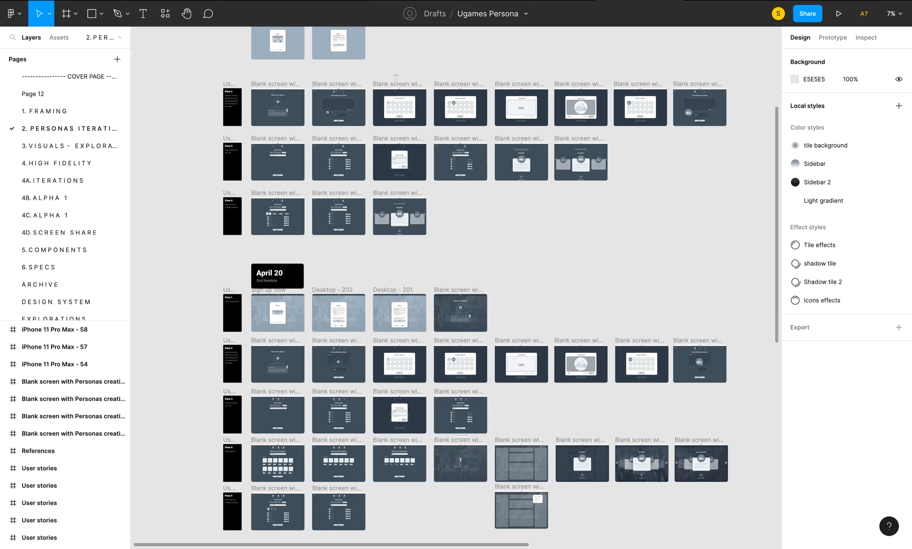
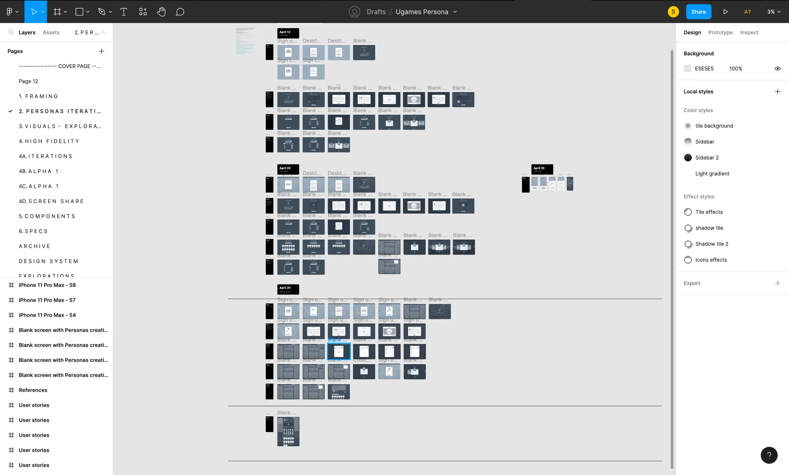
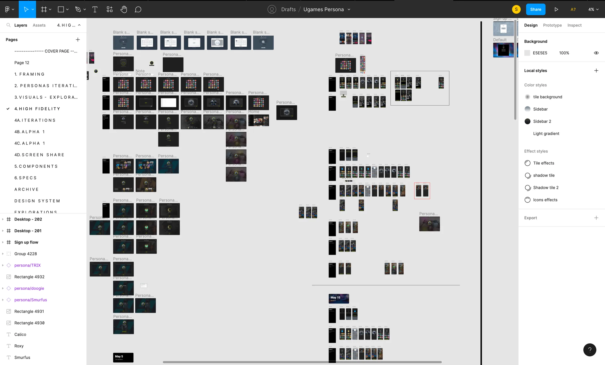
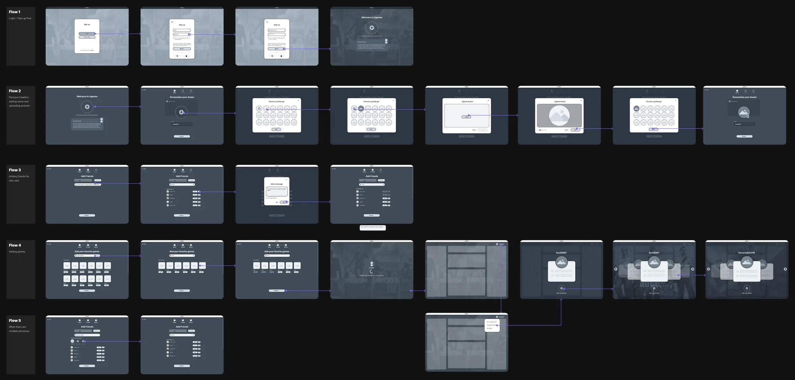
Early exploration
Account registration was to be handled by another team within Unity (Unity passport) and so the registration flow was out of our scope.
Rabble wanted to protect gamers identity to avoid toxicity and in turn provide a safe environment for gamers to interact. So we decided to remove add a friend screen from onboarding, and make it invite only feature.
Choosing favorite games was important to personalize content but during early phases of Rabble, we were focussed more on play component and so personalization had no purpose. We decided to include it in the future version when we have feeds running in the Rabble.
Shaping product direction
Meanwhile, through mock ups, I pitched the idea of including 3D avatars in the rabble ecosystem, providing a more immersive and interactive experience to users. Gamers will be able to customize these avatars to represent their style and personality thus feeling more close to their identity. This will increase the engagement rate within the community and also empower gamers to be more confident and proud of who they are. The idea of 3D avatars received a lot of appreciation from the team and we worked on the tech system to include 3D avatars wherever possible from the phase 2 launch.
Layout Explorations
I explored several layouts for desktop and mobile to make sure designs are simple, can be easily adjusted on different devices and can scale based on device size and additional features that need to be accommodated in future.
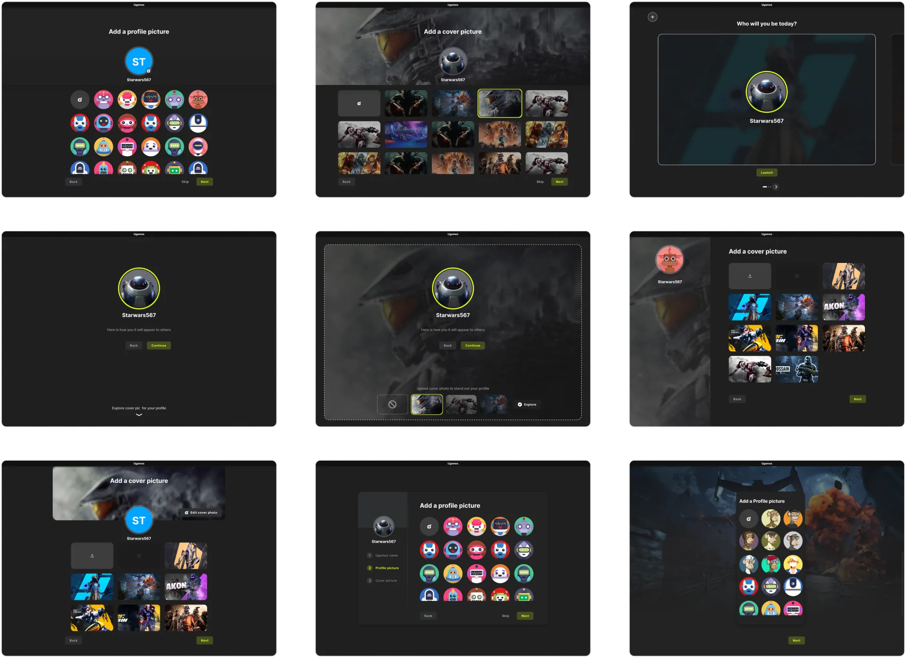
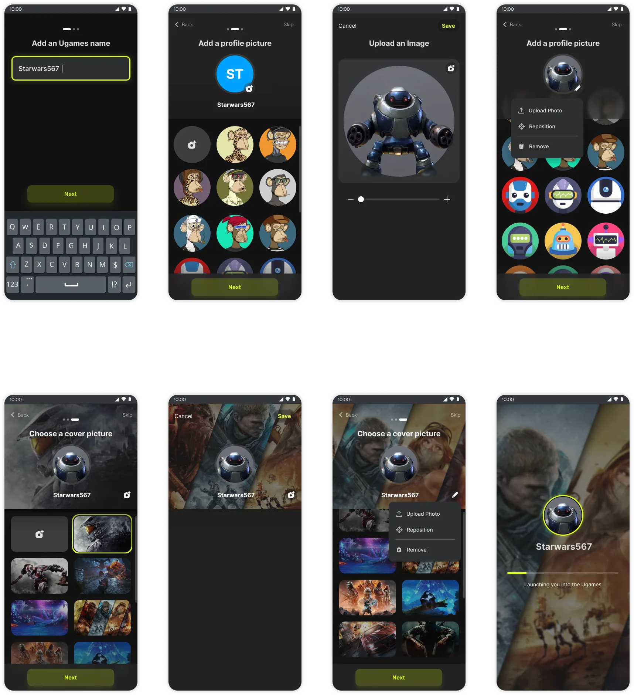
Iteration 1
To instill a sense of gaming personality, I decided to add a touch of immersiveness in the designs which raised the overall quality of the app.
I added a welcome page for new users before they could choose a username to make the onboarding joyful and exciting.
Instead of going full width on desktop, I chose to use modal for onboarding which can easily adjust on different devices like mobile, tab and require minimal engineering efforts.
Constraints
The Rabble app was built with Unity technology, and its limited features affected the ability to add immersive UI styles. Some visual elements and interactions, such as animations, frosty background, drag, long press, had to be compromised. Adding these features would require extra engineering work, which the team decided not to pursue due to the tight timeline.
Initial testing with Unity users showed difficulty in understanding the concept of multiple personas. Participants, who were new to the platform and had few people to interact with, did not see the benefit of having multiple personas. As a result, the team decided to remove the concept.
The decision to include 3D avatars made the profile and cover picture editing feature redundant, so it was removed.
Final Prototype
After several iterations and simplifying the design based on UX and technical constraint I came up with this final design serving our first phase MVP and also getting gamers excited with 3D avatars and how it might shape the future product direction.
Light mode
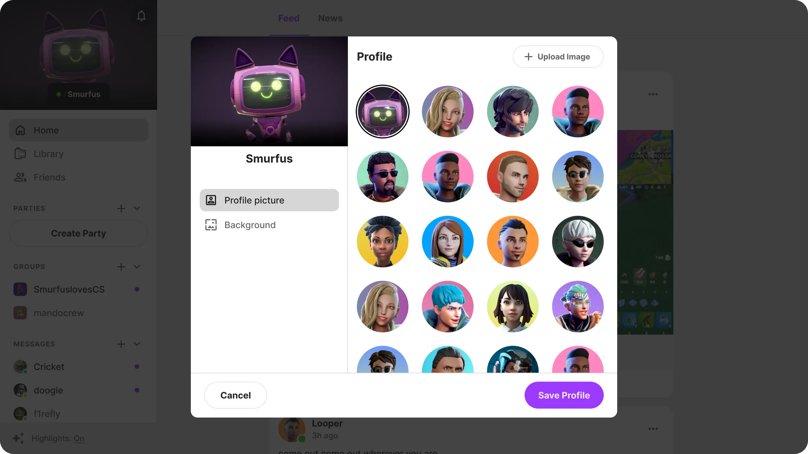
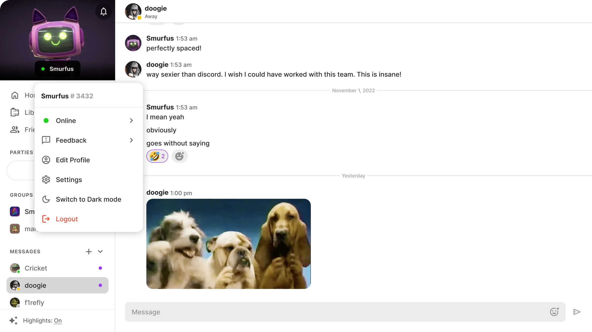
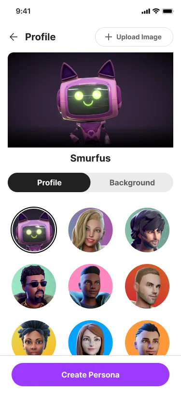
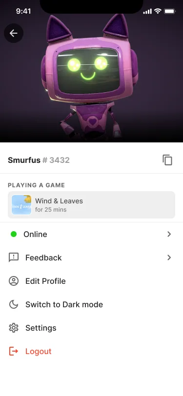
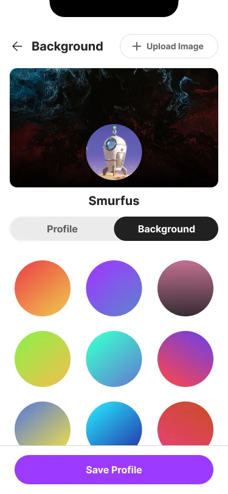